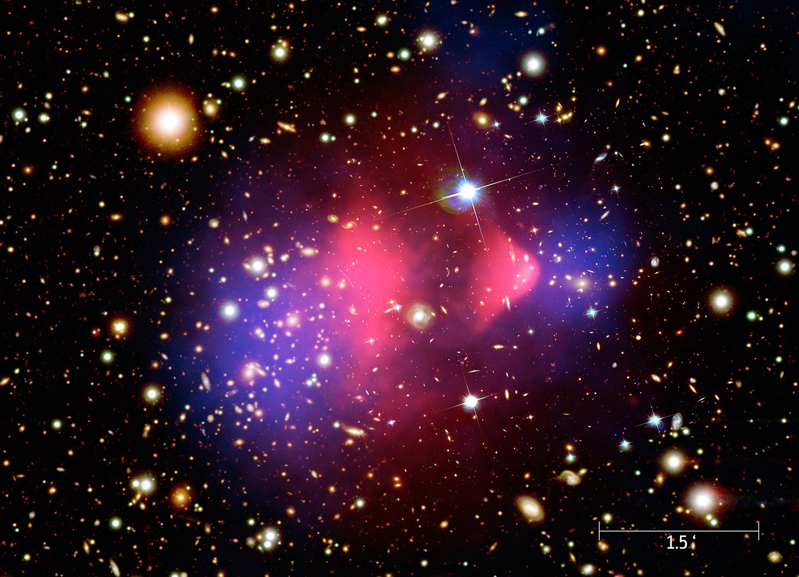

Where you actually live: a pull-back from your street to a two-billion-light-year hole, the web that space is woven from, and the two forces that built all of it.
01 ·
The hole
You live on a planet orbiting an ordinary star, about twenty-six thousand light-years out in the quiet suburbs of the Milky Way. That part of your address you already knew. Here is the part you probably didn't: the Milky Way itself sits near the middle of an enormous underdense region of space — a hole, roughly two billion light-years across, called the KBC void, after Keenan, Barger and Cowie, the astronomers who mapped it in 2013.
← Light needs about two billion years to cross it. That's nearly half the age of the Earth.
The idea that we live in the middle of a giant hole sounds unsettling, maybe even lonely. Hold that feeling — because two things about it turn out to be wrong in interesting ways. The hole is not as empty as the word "void" suggests (that's chapter 09), and living in one may be quietly convenient (that's chapter 10). It might even help explain a real crack in modern cosmology — why local measurements of the universe's expansion keep disagreeing with the prediction from the early universe, the famous Hubble tension.
But first you should feel the scale of the thing. The figure below starts at your doorstep — a field of view one astronomical unit wide, the distance from the Earth to the Sun — and pulls back fourteen orders of magnitude, one smooth zoom, to the edge of the hole. Everything is drawn to honest relative distance. Let it run, or grab the slider.
The pull-back — fourteen orders of magnitudeslider zooms · chips jump
field of view
Every dot is computed, not photographed. Notice the galaxy sits off-center at the middle zooms — that's real: you live 26,000 light-years from its core. The dashed violet ring at the end is the KBC underdensity; the denser sprinkle of galaxies beyond it is the rest of the web.
Your full address: Earth → Sun → Milky Way (suburbs) → Local Group → the KBC underdensity. The last line of it is two billion light-years wide, and you sit near the middle.
02 ·
The web
Zoom out far enough and the universe stops being a blanket of stars. On the largest scales, matter is arranged into a three-dimensional web: long filaments of galaxies, sheets and walls, dense knots where filaments meet — and in between, the voids. This is not a poetic flourish; it is what galaxy surveys actually map, out to billions of light-years.
The web is what gravity does with time and slightly uneven starting material. The infant universe was almost — but not perfectly — smooth. Regions born with a little extra matter pulled harder, so they collected more; regions born a little light kept losing what they had. Run that "rich get richer" rule for 13.8 billion years and the winners become filaments and knots while the losers empty out into voids.
← People love to note it looks like a brain's wiring. The resemblance is structural, not functional: both are networks grown by reinforcing the connections that matter. The universe is not thinking. Probably.
Below is a web grown live in your browser by exactly that logic: sprinkle galaxies at random, let every void push outward, and filaments appear on the boundaries on their own. Drag it to orbit. Two locations are marked — the brightest knot, and a set of three faint dots keeping each other company inside a void. That trio is us.
A cosmic web you can spindrag to orbit
galaxies on filamentsa great attractoryou
Grown by void-repulsion: random points, six relaxation steps pushing out of every void, filaments emerge at the boundaries — a crude browser-sized version of the same logic that grew the real web. Toggle the voids to see the negative space doing the sculpting.
The scaffolding, mapped. The large-scale distribution of dark matter across a patch of sky, reconstructed from how its gravity subtly bends the light of galaxies behind it. The luminous web you can spin above grew along this invisible one. NASA, ESA & R. Massey (Caltech) · CC BY 4.0
The web is the map of a 13.8-billion-year competition: voids empty out, filaments thread between them, knots collect the winnings — and everything left in between flows along the threads toward the knots.
03 ·
Two forces
Two opposing forces carved that web, and the whole rest of this story is their fight. The first you know personally. Gravity is the pull of mass on mass: it scales up with the amount of matter and fades with the square of distance, but it never quite reaches zero — the Sun holds Neptune, the Milky Way holds the Sun, and the Milky Way and Andromeda, two and a half million light-years apart, hold each other.
The second force is stranger. Dark energy is the name we give to whatever is making the expansion of the universe accelerate — a discovery from the late 1990s that won a Nobel Prize and broke everyone's intuition. It behaves less like a force reaching across space and more like a property of space itself: every stretch of emptiness pushes things apart a little, so the farther two objects are, the more expanding space sits between them and the harder they are shoved apart. Next door it's nothing. Across a void it wins.
← Gravity: strong up close, fades with distance. Dark energy: nothing up close, grows with distance. Every pair of galaxies runs this exact contest.
So every pair of galaxies in the sky is running the same tug-of-war. Close together and heavy: gravity wins, they fall toward each other, and eventually they are one galaxy. Far apart and light: expansion wins, and they recede from each other forever, faster and faster. In between there is a crossover distance — inside it you are bound; outside it you are gone. Set up the contest yourself and hit release.
Gravity vs dark energy — the tug-of-warset the contest · release
2.5 Mly
2.0 galaxies
A toy integrator with honest shape: pull ∝ mass ÷ distance², push ∝ distance, calibrated so two Milky-Way-ish galaxies bind within a few million light-years — the real ballpark of the Local Group's edge. The default setup is us and Andromeda: release it and watch our actual long-term forecast.

The mass, caught leaving its gas behind. The Bullet Cluster: two clusters that collided and passed through each other. The hot gas (X-ray) dragged and slowed in the middle; the mass (mapped by the way it bends light) sailed straight on ahead — the clearest direct evidence that most of the universe's gravity isn't attached to anything we can see. X-ray NASA/CXC/CfA · optical & lensing NASA/STScI, Magellan, ESO/WFI · public domain
Every structure that exists — galaxies, clusters, superclusters — is a place where gravity got there first, before expansion could carry the raw material out of reach. The web is a map of everywhere gravity won.
Which raises the question this whole site is about: on the largest scale that still has a grip on us — which side are we on? Something out there is winning the tug-of-war for our entire corner of the universe, and pulling every galaxy around us toward one point in the sky. Part II follows the evidence: the collision we're already falling into, the oldest light in existence, the flow of a thousand galaxies — and the fifth of the sky we cannot search.